Tools & Automation Engineer with 12 years in software development. I build the infrastructure that lets teams ship faster – CI pipelines, performance dashboards, test frameworks, and the automation that keeps builds clean.
Software Engineer at Azra Games (Current)
Game: Ungodly
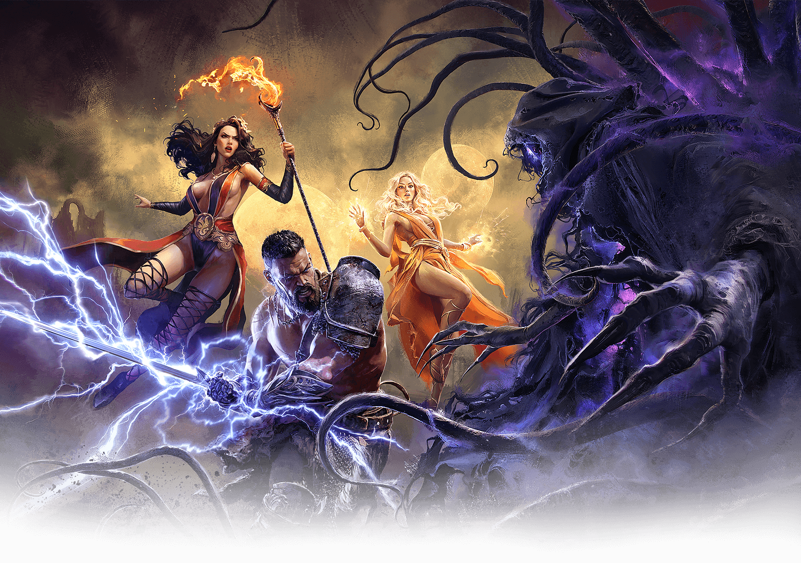
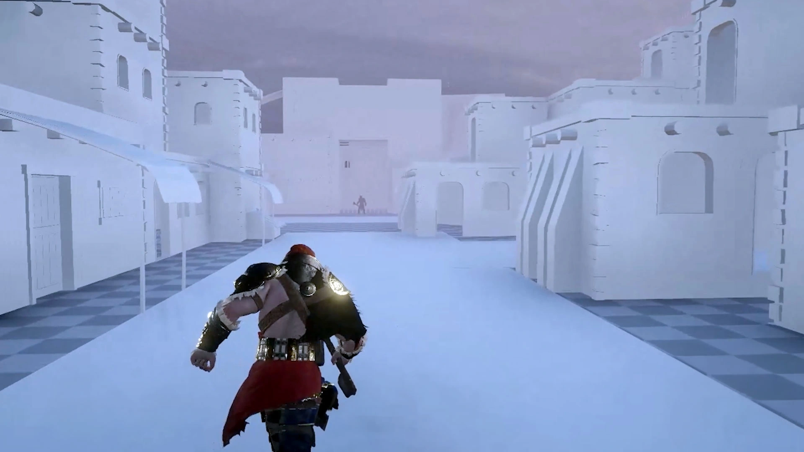
Pre-Commit
- Built pre-commit system that runs a targeted ~15-minute build on every peer review request, catching missing files, assembly definition gaps, and debug-flag hook mismatches before merge
- Catches the vast majority of would-be build breaks – remaining gaps are cases where submitters don't wait for results
- Team has come to rely on the system – active enough to flag 4 separate issues in a single day
Record & Play
- Built ground-up automated testing solution that captures live gameplay sequences and replays them as automated test runs
- Runs across dev and staging environments
- Compiled out of production builds to avoid any footprint in shipped code
Harvest Time
- Solo-built a full-stack internal web application (React + Node.js/Express, deployed on GCP Cloud Run) serving as the central control plane for automated game testing
- Unified Perforce, TeamCity, and AWS Device Farm into a single workflow with an auto-orchestration engine and priority-weighted test scheduling
- Built automated crash analysis pipeline that classifies test failures (OOM, ANR, Jetsam, loading stalls, game crashes vs. infrastructure failures) by parsing device logs – with alerting tied to specific changelists, devices, and tests
- Created interactive 3D performance heatmaps (Three.js) visualizing framerate, memory, and GPU/CPU time across game zones – supports compare mode, LOD rendering, and filtering by device, branch, and changelist
- Designed the data layer across BigQuery, Firestore, SQLite, and GCS; role-based access control via Firebase Auth
Performance Metrics
- Automated performance testing running 24/7 across 9 device models (6 Android, 3 iOS) via AWS Device Farm
- Built area discovery tool that automatically identifies player/enemy spawn points, zone transitions, and interactables – test coverage grows dynamically with new content, currently spanning ~100 in-game areas
- Capture Unity profiling data (CPU, GPU, memory) per run and store statistics (min, max, avg, P5, P95) in BigQuery
- Visualize results in Looker Studio dashboards with filtering by build, device model, and area
Shader Pre-warming
- Extended performance runs to collect graphics state data split by quality level and region
- Expanded coverage beyond automation by crowd-sourcing shader state from all internal playtesting sessions on real builds, filtering out non-representative custom builds
- Comprehensive collection enabled shader pre-warming that eliminated hitching in the game's early areas
Load Testing
- Built standalone C# application that emulates realistic gameplay message sequences against the live game server, using the game's own proto files to ensure protocol accuracy
- Dynamically parsed server responses to handle generated entity IDs and maintain test flow across sessions
- Deployed to AWS Fargate across 50 instances to simulate hundreds of concurrent users
- Collaborated with the server team through ~1 month of iterative testing cycles, surfacing hot-spot database queries and skippable calls – resolved with caching across ~3 significant performance improvements
Mass Request Tool
- Built Unity-based tool to mass-send server requests using the same client code as the production game, enabling realistic gacha simulation at scale
- Ran weekend-long tests executing 100 10-pulls (1,000 results) per account across 10,000 accounts to build statistically reliable drop rate data
- Caught pity system bugs before launch through statistical analysis, mitigating legal and financial risk
- Distributed load across many accounts to prevent state accumulation from skewing results
- Extended to populate leaderboards with thousands of test entries
Agentic Development
- Built a custom MCP server to surface game-specific context and prompt patterns to LLM agents, enabling consistent AI-assisted workflows across the tools team
- Leverage agentic coding tools (Claude Code) to accelerate routine automation work, directing agent workflows while retaining ownership of system design, integration, and code review
- Extended agentic tooling to production workflows – a scheduled Claude analysis job processes daily performance reports across ~100 areas and 9 device models, replacing dense data tables with targeted actionable summaries
Daily Reports
- Daily automated Slack reports flagging performance regressions and out-of-budget assets (models, textures, memory, download size), posted each morning
- When first deployed, only ~30% of runs met performance targets – consistent daily visibility drove that to 98–99% as the team focused on launch readiness
- Still surfaces ~1 new significant issue per week, typically in newly developed areas
- Integrated a scheduled Claude analysis job to summarize results across ~100 areas and 9 device models – replacing a dense data table with actionable daily highlights
Software Engineer 2 at Electronic Arts (4 years)
Notable title: Star Wars: Galaxy of Heroes
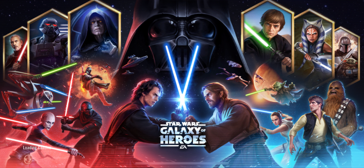
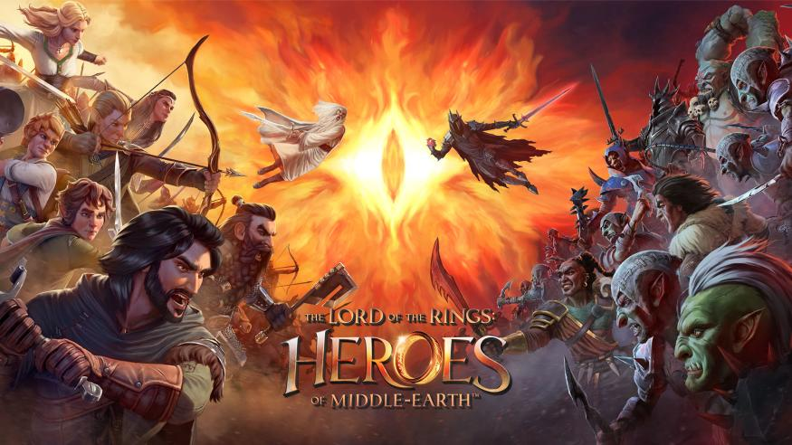
Pre-Commit
- Built an extensible pre-commit framework for the Star Wars: Galaxy of Heroes team, triggering on peer review requests via Jenkins
- Each test scopes itself to relevant file changes to minimize run time, focused on the team's most common failure modes including missing files and assembly issues
AWS Device Farm Migration
- Migrated from a degraded 4-device local farm (multiple failures due to battery bloat) to 6 device models on AWS Device Farm
- Eliminated device maintenance overhead, improved reliability, and integrated the new farm into existing Jenkins pipelines
Record & Play
- Proposed and built live gameplay recording integrated into the existing automation framework, eliminating repetitive manual QA testing
- Deployed to 3 EA mobile titles, enabling QA teams to replay captured sessions as automated test runs across multiple environments
Additional Test Reporting
- Extended the automation framework to post results directly to Zephyr, giving QA a live view of test status without manual reporting
Improve Test Automation
- Replaced hard-coded delays with conditional waits and timeout handling
- Added intelligent interception of unexpected prompts (ads, rewards, connection issues)
- Replaced polling with real-time screen state relay, reducing load and improving responsiveness
- Increased framework uptime from 30% to 95% through systematic elimination of flaky patterns and maintenance debt
- Ported framework to 5 mobile titles
Software Engineer at Iron Horse Games – Contract (5 months)
Steam Town
- Ramped up on an unfamiliar codebase and engine (GameMaker) independently, with no onboarding support
- Upgraded UI with new animations and resolution support
- Refactored to cut code volume and complexity by over 50%
- Implemented custom 9-slicing for scalable UI panels where the platform had no built-in support
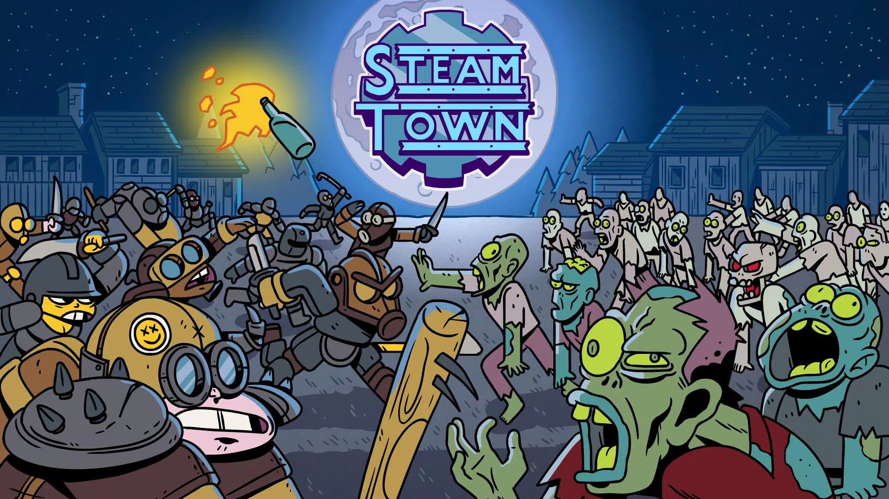
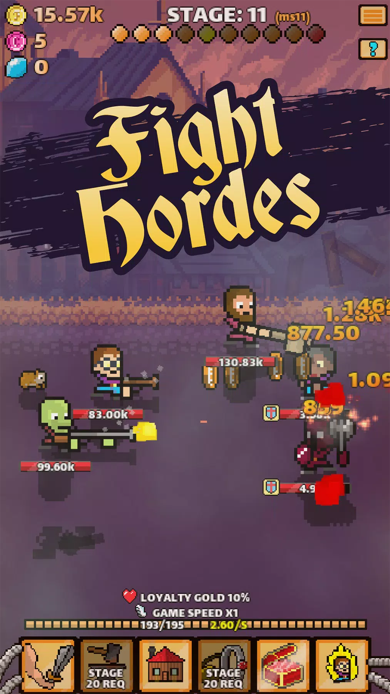
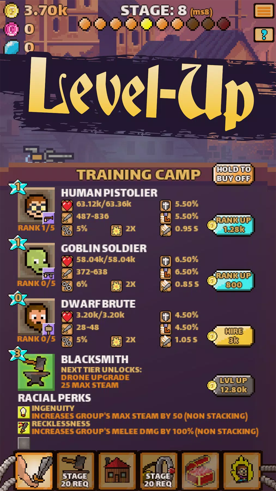
Superhero Comic Prototype
- Prototyped smooth comic panel transitions – reframing, brightening, and panning across cells – to drive design discussions
Full Stack Software Engineer at 5th Planet Games (1 year)
Dawn of the Dragons: Ascension
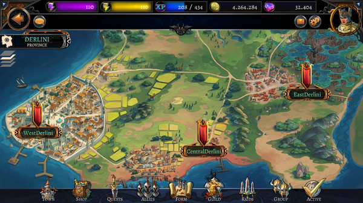
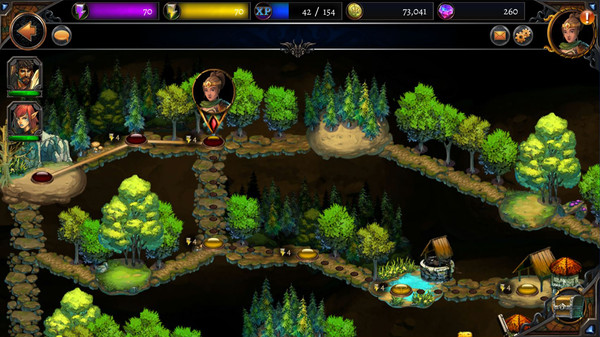
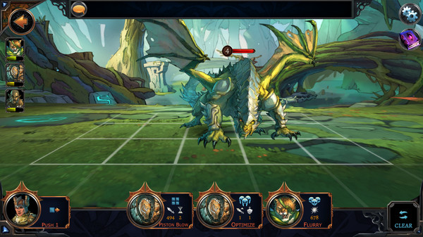
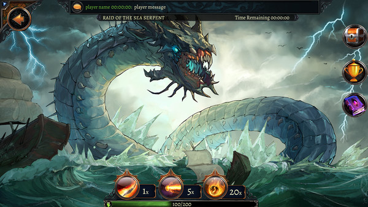
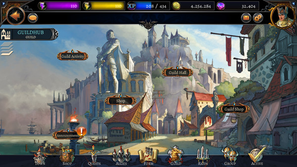
Campaigns Guild Feature
- Collaborated with designer and engineer on technical design documents for a full guild campaign feature
- Implemented across server and client: shared map navigation with an energy resource, strategic node defeats to limit event-wide buffs, and automated loot delivery to player inboxes
- Completed full feature development before the game's sunset
UI
- Implemented UI from art mockups and wireframes
- Identified and made UX improvements for clarity, retention, and monetization
- Converted mobile UI to PC with dynamic scaling and mouseover text
Support
- Built, tested, and maintained features across the server, client, and admin tools, including bug fixes and code reviews
Software Engineer 2 at Northrop Grumman (6 years)
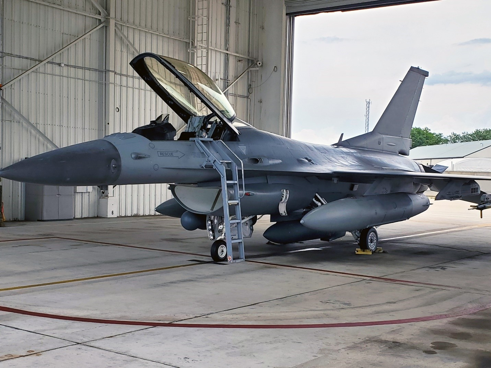
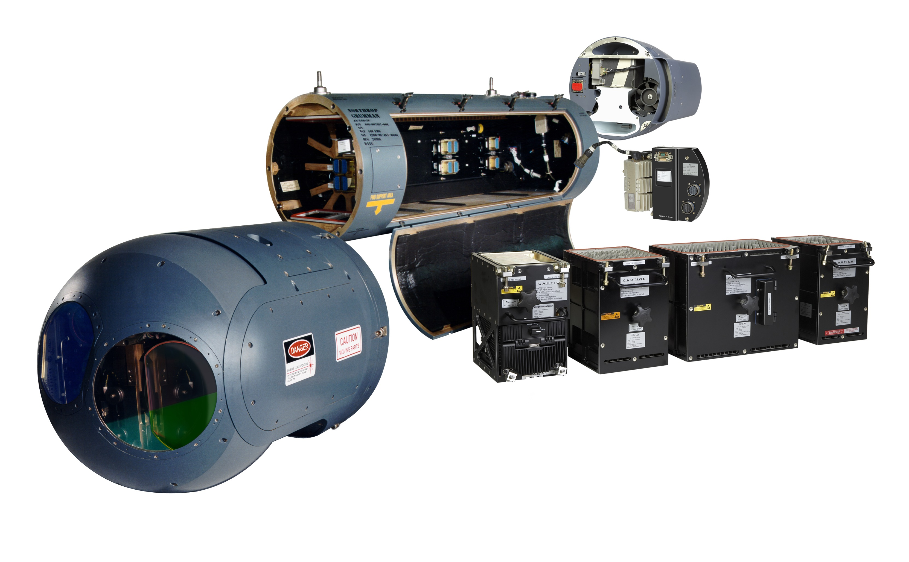
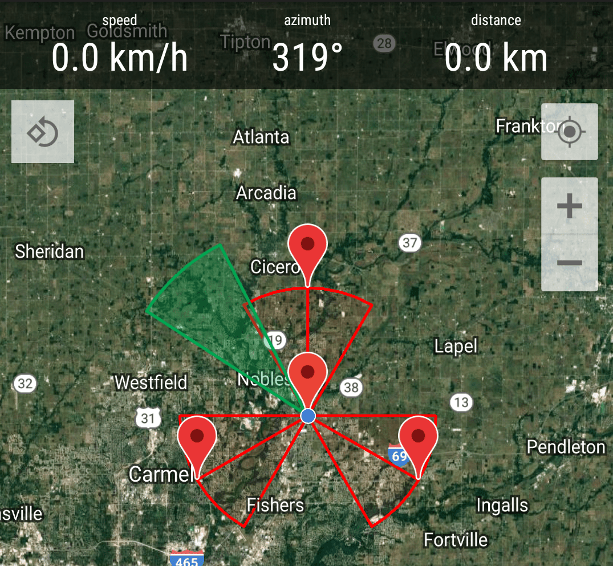
Mission Control Accreditation
- Led integration environment setup for a 50,000+ man-hour government contract, coordinating hardware and software components across teams
- Managed a team of 5 engineers
- Authored and executed the full accreditation test procedure
- Built a RESTful Java API to forward messages between mission control scripts and firmware
- Successfully completed accreditation, directly resulting in a contract extension
Mission Control Browser Tools
- Built browser-based tools through iterative stakeholder collaboration: hardware status visualization (power, diagnostics, temperature), resource allocation for pod components (antenna, filtering, scanning), signal processing pipeline configuration, and platform location tracking over time
Prototype Internal R&D Projects
- Network visualization using JUNG, procedural device configuration via SNMP, and a minimax-based rule engine for automated network response
Sensor Chassis Test Suite
- Developed and validated diagnostic test suite for sensor chassis, deployed on an air-gapped network
Sensor Calibration Real-World Flight Testing
- Validated sensor calibration procedures against real hardware during live flight tests
- Directed pilot navigation to predetermined antenna coverage points
Generalist Programmer / Co-owner at DoubleA Studios – College Startup (1.5 years)
Kelkom
- LAN-based medical appointment scheduling and metrics system
- Deployed on a tablet to replace a hardware unit with blinking buttons
TTRPG Visualization Tool
- Character manager and visualization tool for table-top RPGs (Primarily D&D)
- Includes a separate initiative tracking application with status effects and dynamic layout scaling
Windows Taskbar Messaging Tool
- Broadcast messaging system for posts and advertising in a Windows toolbar
- Includes tabs to track multiple messaging channels including financial advice and retail coupons
From Space (Twin-stick shooter)
- 3 unique playable races
- Junkers generate trash shields, create turrets, and fire rapidly
- Space snails regenerate, charge forward, and gain a spread shot
- Saucers turn instantly, fire homing missiles, and fire bullets that shoot more bullets
- Enemies attempt to dodge projectiles, weaving through on higher difficulties
- Enemies drop powerup crates
Side Projects
Outside of work I regularly build small games and tools to explore ideas, learn new techniques, or just have fun. None of this is polished or professional-grade work – it's how I stay sharp and curious about the craft.
Online Portfolio (this page)
- Filter and search experience by technology, with preset views and per-skill ratings and time totals
- PDF/print export, image lightbox, and hover tooltips showing filter tags per subsection
- github
Procedural Hex World
- Infinite procedural world generation using noise-based algorithms
- Object pooling system that reuses and repositions tiles for optimal performance
- Draw call optimization through batching and object reuse
- Horizon shader effects simulating small-planet navigation
- Instant warp system allowing navigation to any coordinate
FFXI Gearswap Scripts
- Dynamic equipment optimization system using weighted stat evaluation
- Real-time adaptation to level changes, situational requirements, and available gear
- Automatic gear set generation based on current context (MP available, day of week, action type)
Manic Space Bot Repair (GGJ 2020)
- Gather parts and fix the bots so they can repair the ship
- Global game jam
How Our Mission Ended (GGJ 2019)
- Fight or befriend in a quest for stuffium
- Pathfinding and behavior system for robot NPCs
- Global game jam
Lumen (GGJ 2018)
- Resource collection and management
- Global game jam
Ravenous Void (Ludum Dare 45)
- Brave the unknown to gather the power to fend off the darkness
- Procedural world generation
- JSON-based music
- ludum dare
Herding Cats (Ludum Dare 44)
- Armed with a lazer pointer, try to get cats to assist in solving puzzles
- ludum dare
AI Opponent for a Customized Chess Game
- Use Negamax algorithm to select best move
- github
Jigsaw Puzzle Creator
- Chop any image into puzzle pieces and put them back together again
- github
Education
Sacramento State
- Received a bachelor's degree in computer science
- Worked as an adjunct professor, tutor, and grader covering all undergraduate computer science coursework
- Represented school in state programming competition
San Joaquin Delta College
- Received an associate's degree in computer science